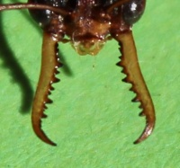
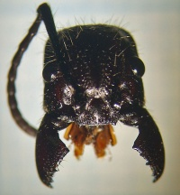

Mandibeln


Die Mandibeln sind die typischen Mundwerkzeuge der zu den Gliederfüßern gehörenden Mandibulata. Zu dem sogenannten "Mandibulata-Konzept" werden neben den Tracheentieren (Insekten) auch noch die Krebstiere gezählt, allerdings ist umstritten, ob die Krebstiere und Tracheentiere die Mandibeln nicht unabhängig voneinander erworben haben.
Die Mandibeln stellen eine Umgestaltung des 3. Beinpaares im Kopfbereich der Tiere dar und entsprechen damit den Pedipalpen der Spinnentiere. Die Mandibeln bestehen im wesentlichen aus einer kräftigen Kaulade, die an einem oder an zwei Angelpunkten aufgehängt sind. Sie werden meist durch zwei Muskeln bewegt, die mit kräftigen Sehnen an den oberen Rändern inserieren.
Sie dienen zum Zerbeißen und Zerkauen pflanzlicher und tierischer Nahrung oder als Greifwerkzeug beim Transport bzw. Manipulieren von Objekten. Räuberische Arten benutzen ihre Mandibeln zum Beutefang.
Unter den Ameisen gibt es die unterschiedlichsten Arten von Mandibeln und deren Nutzung.
- Einige Gattungen besitzen sogenannte Schnappkiefer (z.B. Odontomachus, Myrmoteras), die nach Aktivierung durch Auslöserhaare mit 35-64 m/s auf den Verursacher des Reflexes "niederdonnern". Diese Bewegung der Schnappkiefer bei Odontomachus ist die schnellste gemessene im Tierreich. In diesem Fall werden die Mandibeln sogar zur springenden Fortbewegung genutzt [1]; für Videos dazu s. hier.
- Blattschneiderameisen wie die Gattungen Atta und Acromyrmex benutzen ihre Mandibeln unter anderem dazu organisches Material wie Blätter zu schneiden und transportieren. Die Mandibeln werden im Laufe eines Arbeiterinnenlebens durch die starke Beanspruchung stumpf und das Blätterschneiden damit ineffektiv - diese älteren Arbeiterinnen werden dann bevorzugt zum Transport der geschnittenen Blattstücke eingesetzt. [2]
- Räuberisch lebende Arten wie z. B. die der Gattung Myrmecia hingegen verwenden ihre Mandibeln fast ausschließlich um damit Beutetiere zu erjagen.
- Die sichelartigen, fein gezahnten Mandibeln des Sklavenhalters Polyergus rufescens sind darauf ausgelegt, den Chitinpanzer gegnerischer Ameisen zu durchdringen
- Glatte Mandibeln ermöglichen Harpagoxenus sublaevis die einfache Amputation von Gliedmaßen bei der Eroberung einer potenziellen Gründerkolonie
Der Unterschied zwischen räuberisch lebenden Arten und Arten die nicht aktiv jagen ist schnell anhand der Mandibelbezahnung festzustellen. Das obere Bild zeigt die Mandibeln einer Myrmecia nigriceps-Arbeiterin. Die Gattung Myrmecia jagt aktiv Beutetiere wie kleine Wirbellose, die mit den Mandibeln festgehalten und dann mit dem Stachel betäubt und getötet werden. Hierzu ist eine ausreichende Bezahnung notwendig, um das Beutetier fest umklammern zu können. Die spitzen gerundeten Enden verstärken den Effekt. Um ein Beutetier zusammengezogen können sich die Enden je nach Durchmesser des Beutetieres berühren, und wie eine geschlossene Zange wirken. Ein Entkommen aus diesem Griff ist fast nicht möglich, die Arbeiterin kann gezielt das Gift injizieren.
Anders verhält es sich bei der unten abgebildeten Paraponera clavata-Arbeiterin. Die Nahrung dieser Art besteht zu 80 - 90 % aus Kohlenhydraten, der Proteinbedarf wird vermutlich hauptsächlich durch Vogelkot und Aas, oder bereits schwache Wirbellose die durch einen Stich getötet werden, gedeckt. Aktives Jagdverhalten ist bei der Art nicht zu beobachten, die Mandibeln dienen somit als Allzweckwerkzeug.
- Variationen der Mandibeln unter verschiedenen Ameisenarten

Mandibeln einer Polyergus rufescens -Arbeiterin

Zeichnung der Schnappkiefer-Mandibeln von Odontomachus hastatus

Mandibeln von Leptogenys maxillosa

Kopf und Mandibeln von Harpegnathos venator

"Geeckte" Mandibeln einer Huberia striata -Arbeiterin

"Heugabelförmige" Mandibeln einer ‘‘Thaumatomyrmex atrox -Arbeiterin


_Myrmecia_nigriceps.jpg.html){kind=link}
{kind=link}
Metall-verstärkte Mandibeln
Schon seit längerem sind Einlagerungen von Zink in die Schneidkanten von Insektenzähnen bekannt. Diese Einlagerungen sollen die Abnutzung der Zähne verringern und die Belastbarkeit erhöhen.
Nachgewiesen wurden diese Einlagerungen unter anderem bei Atta cephalotes, Camponotus herculeanus, Formica rufa und Polyrhachis dives, in mehr oder minder hoher Konzentration.[3]
Die Zinkverstärkung ist insbesondere in den Spitzen der Mandibelzähne zu finden, ähnlich wie die Schmelzauflage bei Säugetierzähnen, ferner auch entlang der Innenkanten der Mandibeln, also von der Kauleiste zur Mandibelbasis.
Siehe auch
Einzelnachweise
- ^ Patek SN, Baio JE, Fisher BL, Suarez AV (2006). "Multifunctionality and mechanical origins: Ballistic jaw propulsion in trap-jaw ants" (PDF). Proceedings of the National Academy of Sciences 103 (34): 12787–12792. doi:10.1073/pnas.0604290103
- ^ Robert M. S. Schofield, Kristen D. Emmett, Jack C. Niedbala und Michael H. Nesson 2020: Leaf-cutter ants with worn mandibles cut half as fast, spend twice the energy, and tend to carry instead of cut; Behavioral Ecology and Sociobiology, doi 10.1007/s00265-010-1098-6; hier ein deutscher Artikel dazu
- ^ Dieterich, A. & Betz, O. 2009: Elementsensitive Synchrotron-Mikrotomographie zur Darstellung von Zinkeinlagerungen in den Mandibeln ausgewählter Insekten. Mitt. Dtsch. Ges. Allg. Angew. Ent. 17, 285-287 (European Synchrotron Radiation Facility)